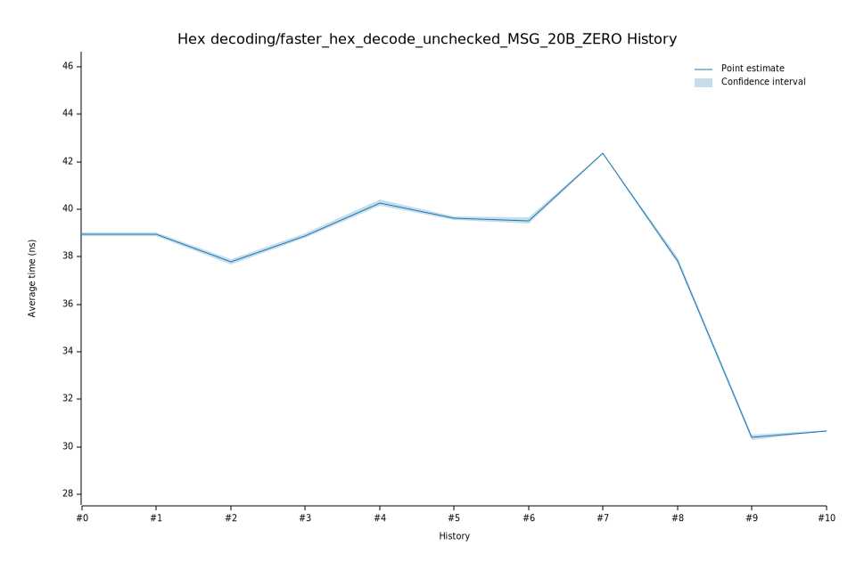

# 42023-02-09T13:06:12Z
|
Lower Bound |
Estimate |
Upper Bound |
| Value: |
40.13ns |
40.27ns |
40.41ns |
| Change in Value: |
+3.1945% |
+3.6294% |
+4.0683% |
No change in performance detected.
# 32023-02-08T19:14:04Z
|
Lower Bound |
Estimate |
Upper Bound |
| Value: |
38.78ns |
38.88ns |
38.98ns |
| Change in Value: |
+2.5693% |
+3.0709% |
+3.5377% |
No change in performance detected.
# 22022-12-05T09:01:40Z
|
Lower Bound |
Estimate |
Upper Bound |
| Value: |
37.66ns |
37.77ns |
37.88ns |
| Change in Value: |
-3.6272% |
-3.2702% |
-2.8507% |
No change in performance detected.
# 12022-11-14T12:17:16Z
|
Lower Bound |
Estimate |
Upper Bound |
| Value: |
38.86ns |
38.94ns |
39.01ns |
| Change in Value: |
+0.0063% |
+0.2429% |
+0.4798% |
No change in performance detected.
# 02022-11-04T13:54:31Z
|
Lower Bound |
Estimate |
Upper Bound |
| Value: |
38.89ns |
38.95ns |
39.01ns |